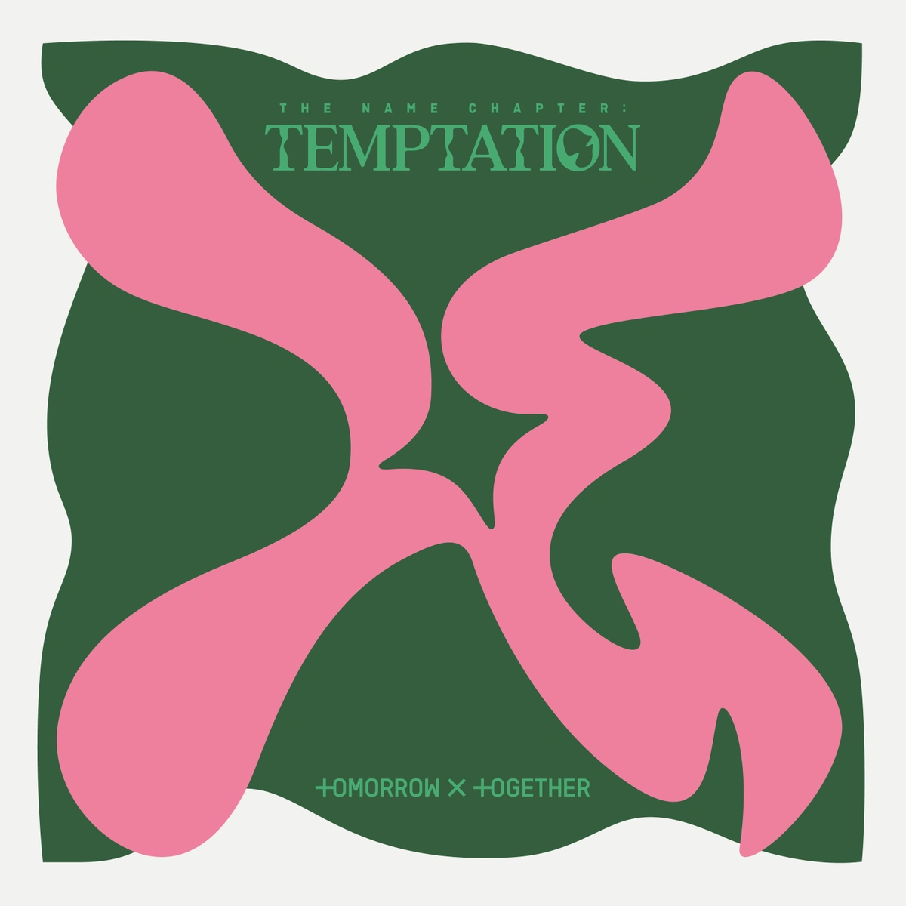
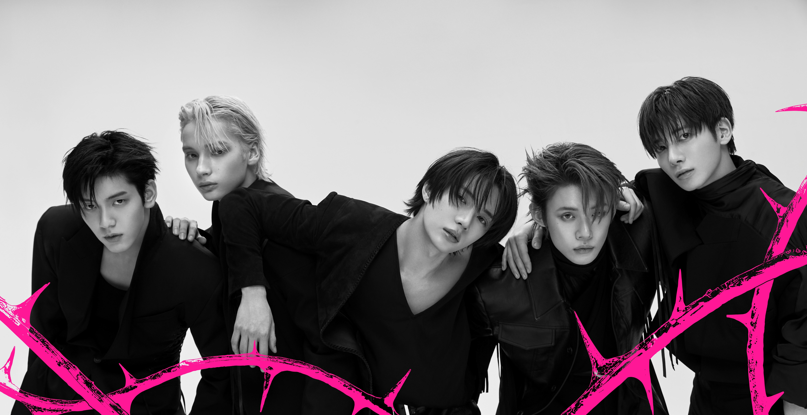

Unique Phenomen
The group has reached an incredible milestone of 7 consecutive million-seller albums, with each one surpassing 1 million copies sold in the first week on Hanteo.

The group has reached an incredible milestone of 7 consecutive million-seller albums, with each one surpassing 1 million copies sold in the first week on Hanteo.

TXT is the only Korean artist in history to have an album chart on the Billboard 200 every year since their debut.